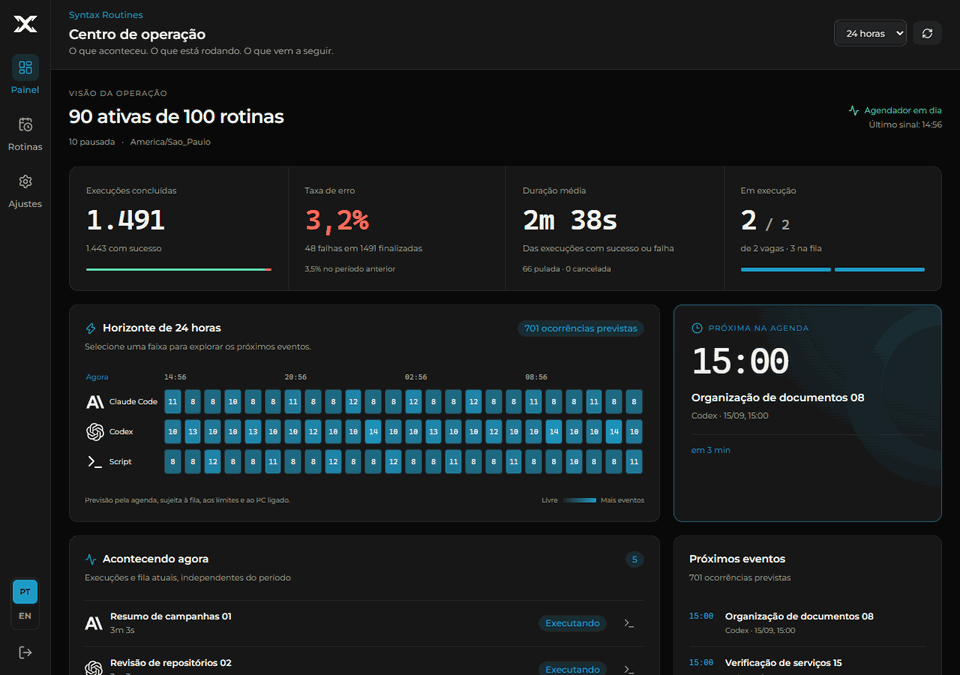
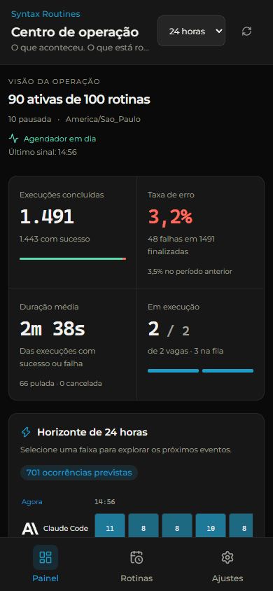

Claude Code
Prompt por stdin com bypass de permissões, modelo e esforço definidos na rotina. Limite de uso: até três tentativas, e pode trocar para o Codex sozinho.
claude --model opus prompt Resuma as campanhas de ontem… agenda seg a sex, às 09:00
Open source · Claude Code, Codex e scripts
Cadastre uma vez: quem executa, os dias, a hora e o que fazer. O Syntax Routines roda o Claude Code, o Codex ou o seu script no seu computador e manda um e-mail só quando algo falha.
Sem servidor, sem conta, sem nuvem. Um processo local, um banco SQLite e um painel em 127.0.0.1.
Usa Claude Code ou Codex? Tem uma skill para o próprio agente cuidar das rotinas.
Role
Prompt por stdin, modelo e esforço definidos por você, bypass de permissões dentro da pasta.
O mesmo caminho, com troca automática de agente quando o limite de uso acaba.
Uma linha de comando como no cmd. Código de saída 0 conclui, qualquer outro é falha.
Instala sem administrador, sobe no seu login e reinicia se cair. macOS em beta, Linux experimental.
O problema
O resumo de toda manhã, a fila conferida a cada 15 minutos, a varredura semanal do repositório. Hoje isso mora em dois lugares ruins.
Toda segunda eu abro o chat e peço o mesmo resumo de novo.
Vira uma rotina Claude Code com prompt, dias e hora. Segunda às 09:00 ela roda sem você digitar nada.
Está no Agendador do Windows, num .ps1 que ninguém lembra de onde veio.
Vira uma rotina de script com histórico e saída de cada execução no painel, e o comando visível em vez de escondido.
A fila precisa ser conferida a cada 15 minutos, e ninguém fica olhando.
Vira uma rotina por intervalo, de 5 min a 12 h, nos dias marcados. Falhou, chega um e-mail. Deu certo, silêncio.
Como funciona
Quem executa (Claude Code, Codex ou uma linha de comando), a pasta, os dias, a hora ou o intervalo, e o prompt ou o comando. Pelo painel, pelo CLI ou pelo próprio agente.
No seu PC, com a sua conta, sem pedir permissão, dentro da pasta que você escolheu. Tela bloqueada não interrompe. PC desligado no horário: você decide se pula ou se executa ao ligar.
Código de saída, timeout, limite de uso esgotado, pasta fora do lugar: qualquer falha gera um e-mail com a rotina, o erro e o link do painel. Sucesso não avisa, e o log fica 30 dias.
Três tipos de rotina
Rotina de agente recebe um prompt. Rotina de script recebe uma linha de comando. As duas ganham dias, hora, histórico e aviso.
Prompt por stdin com bypass de permissões, modelo e esforço definidos na rotina. Limite de uso: até três tentativas, e pode trocar para o Codex sozinho.
claude --model opus prompt Resuma as campanhas de ontem… agenda seg a sex, às 09:00
O mesmo contrato do Claude Code, com o executor da OpenAI. Serve de reserva de um para o outro quando "Trocar de agente automaticamente" está ligado.
codex modelo padrão do CLI prompt Revise o repositório e abra… agenda dom, às 07:00
Uma linha de comando como você digitaria no cmd, executada no diretório da rotina, sem janela. Código de saída 0 conclui; qualquer outro é falha, e vira e-mail.
cmd powershell -File check-backup.ps1 pasta D:\Backups agenda todos os dias, a cada 15 min
Toda rotina roda dentro da pasta mãe definida em Ajustes, por caminho real: junction ou symlink para fora é recusado, e pasta do sistema é bloqueada. Até N execuções em paralelo, uma por rotina.
Princípio
Um processo local que sobe no seu login, um banco SQLite na pasta do app e um painel que só escuta em 127.0.0.1. Quem tem a senha do painel manda no seu PC, então trate a senha como a da sua conta no computador.
CLI + skill
O app vem com um CLI e uma skill para Claude Code e Codex. Com os dois instalados, o agente enxerga as rotinas, sugere agendar o que você repete e cadastra depois que você autoriza.
list, show, settings, runs e log: agenda, próxima execução, como terminou a última e a saída inteira.add, edit, enable, disable, run-now e rm, pela mesma validação das rotas da API.Em Claude Code, sem clonar nada:
/plugin marketplace add thalesholleben/syntax-routines /plugin install syntax-routines@syntax-routines
Para o Codex, a partir de um clone: node scripts/install-skill.mjs codex. Detalhes em skills/.
Por dentro
Dashboard, rotinas e ajustes. Veja o que acontece agora, o que vem depois e como configurar cada rotina. Capturas reais com dados de demonstração.



Instalação
Windows 10 ou 11, ou macOS 13 ou mais novo (beta), com Node.js 24.13 ou mais novo. Para rotinas de agente, o claude e o codex já instalados e autenticados no seu usuário.
Windows
# na pasta onde você guarda projetos git clone https://github.com/thalesholleben/syntax-routines.git cd syntax-routines .\service\install.ps1 -Build
macOS e Linux beta
# no terminal, sem sudo git clone https://github.com/thalesholleben/syntax-routines.git cd syntax-routines ./service/install.sh --build
Instala as dependências, gera o build e registra o serviço que sobe no seu login, sem janela e reiniciando se cair: tarefa agendada no Windows, LaunchAgent no Mac, unit do systemd no Linux. Também cria o atalho que abre o painel em modo app no Chrome ou no Edge.
Você cria a senha do painel. Depois, em Ajustes, define a pasta mãe onde as rotinas podem rodar e clica em Configurar e-mail: Gmail com senha de app ou outro servidor SMTP, testado na hora de salvar.
.\service\uninstall.ps1 no Windows, ./service/uninstall.sh no Mac e no Linux. Os dados em data/ ficam. Sem instalar o serviço: npm install, npm run build e start.cmd (ou ./start.sh).
Perguntas frequentes
Cada rotina de hora fixa escolhe "Pular esta vez" ou "Executar ao ligar", com o atraso definido em Ajustes. Se perdeu várias ocorrências, só a mais recente conta. Rotina por intervalo simplesmente espera a próxima grade.
Não. O app roda como serviço do seu usuário (tarefa agendada no Windows, LaunchAgent no Mac), então precisa de você logado, mas não de tela desbloqueada. Se o computador ligar e ninguém entrar, as rotinas esperam o login.
A rotina tenta até três vezes. Com "Trocar de agente automaticamente" ligado, ela cai para o outro agente; desligado, espera o horário de reset. Esgotou as tentativas, vira falha, e falha vira e-mail.
Em Ajustes, o botão Configurar e-mail abre um modal: escolha Gmail (com uma senha de app, que exige a verificação em duas etapas) ou outro servidor SMTP, o e-mail que envia e quem recebe. Ao salvar, o app testa a conexão e mostra Conectado ou o motivo da falha, e a senha vai para o cofre do seu sistema: DPAPI no Windows, Chaves no macOS, chaveiro no Linux. Toda execução que termina em falha gera um e-mail com a rotina, o erro e o link do painel; sucesso não avisa. Quem prefere ainda pode usar o .env.
Sim, e é de propósito: rotina de agente roda o Claude Code ou o Codex com --dangerously-skip-permissions, e rotina de script roda qualquer comando, sempre dentro da pasta mãe que você escolheu, conferida por caminho real. O servidor escuta só em 127.0.0.1, exige senha (scrypt) para tudo além do login e guarda Host e Origin em toda a API. Quem tem a senha do painel, ou acesso à pasta do app, manda no seu PC: trate a senha como a senha da sua conta no computador.
Funciona, em beta desde 15/09/2026. O instalador registra um LaunchAgent que sobe o app no seu login, o atalho abre o painel em janela própria e a senha do e-mail fica nas Chaves do macOS. A cada envio de código, o projeto roda em uma máquina macOS de verdade: testes, build, teste de tela no Chrome e instalar e desinstalar o serviço. O que só dá para conferir com um Mac na mesa (o primeiro login, o aviso das Chaves, o Mac Intel) está listado no repositório, em docs/runbooks/macos-primeira-execucao.md. No Linux é o mesmo caminho, em versão experimental, com systemd --user.
Não. Comercialmente é uma extensão do Syntax Ops, o painel da SyntaxLab para despachar trabalho a agentes. Tecnicamente é independente: repositório, banco e processo próprios, sem nenhuma dependência de outro produto.
É um projeto open source em versão 0.1, em uso diário pelo autor. Issues e pull requests são bem-vindos no GitHub; não há canal de suporte com prazo. O que está verificado, com comando e saída, fica nos planos em docs/plans/ do repositório.
Comece hoje
Clone ou baixe, rode o instalador, crie a senha e cadastre a primeira rotina. Ou peça para o seu agente fazer isso.